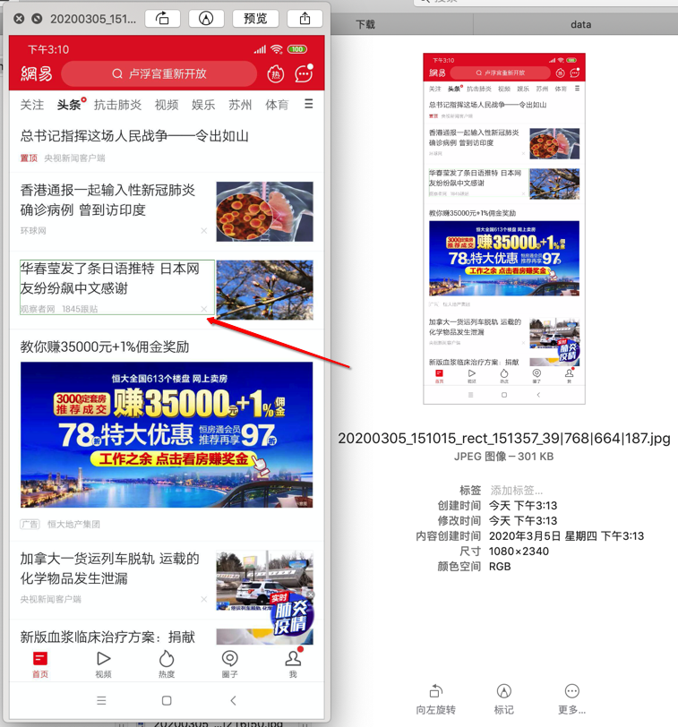
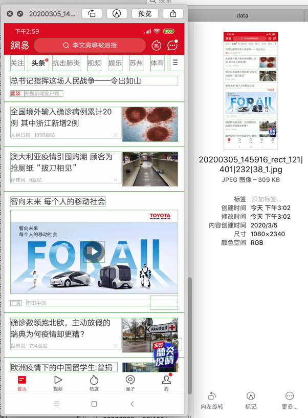

Pillow
- Pillow
- 继承自：
PILPIL=Python Imaging Library
- 官网资料：
- 继承自：
从二进制生成Image
if isinstance(inputImage, bytes):
openableImage = io.BytesIO(inputImage)
curPillowImage = Image.open(openableImage)
pillow变量是：
# <PIL.PngImagePlugin.PngImageFile image mode=RGBA size=3543x3543 at 0x1065F7A20>
# <PIL.JpegImagePlugin.JpegImageFile image mode=RGB size=1080x1920 at 0x1026D7278>
详见：
- 【已解决】Python如何从二进制数据中生成Pillow的Image
- 【已解决】Python的Pillow如何从二进制数据中读取图像数据
从Pillow的Image获取二进制数据
import io
imageIO = io.BytesIO()
curImg.save(imageIO, curImg.format)
imgBytes = imageIO.getvalue()
详见：
【已解决】Python的Pillow如何返回图像的二进制数据
缩放图片
import io
from PIL import Image, ImageDraw
def resizeImage(inputImage,
newSize,
resample=Image.BICUBIC, # Image.LANCZOS,
outputFormat=None,
outputImageFile=None
):
"""
resize input image
resize normally means become smaller, reduce size
:param inputImage: image file object(fp) / filename / binary bytes
:param newSize: (width, height)
:param resample: PIL.Image.NEAREST, PIL.Image.BILINEAR, PIL.Image.BICUBIC, or PIL.Image.LANCZOS
https://pillow.readthedocs.io/en/stable/reference/Image.html#PIL.Image.Image.thumbnail
:param outputFormat: PNG/JPEG/BMP/GIF/TIFF/WebP/..., more refer:
https://pillow.readthedocs.io/en/stable/handbook/image-file-formats.html
if input image is filename with suffix, can omit this -> will infer from filename suffix
:param outputImageFile: output image file filename
:return:
input image file filename: output resized image to outputImageFile
input image binary bytes: resized image binary bytes
"""
openableImage = None
if isinstance(inputImage, str):
openableImage = inputImage
elif isFileObject(inputImage):
openableImage = inputImage
elif isinstance(inputImage, bytes):
inputImageLen = len(inputImage)
openableImage = io.BytesIO(inputImage)
imageFile = Image.open(openableImage) # <PIL.PngImagePlugin.PngImageFile image mode=RGBA size=3543x3543 at 0x1065F7A20>
imageFile.thumbnail(newSize, resample)
if outputImageFile:
# save to file
imageFile.save(outputImageFile)
imageFile.close()
else:
# save and return binary byte
imageOutput = io.BytesIO()
# imageFile.save(imageOutput)
outputImageFormat = None
if outputFormat:
outputImageFormat = outputFormat
elif imageFile.format:
outputImageFormat = imageFile.format
imageFile.save(imageOutput, outputImageFormat)
imageFile.close()
compressedImageBytes = imageOutput.getvalue()
compressedImageLen = len(compressedImageBytes)
compressRatio = float(compressedImageLen)/float(inputImageLen)
print("%s -> %s, resize ratio: %d%%" % (inputImageLen, compressedImageLen, int(compressRatio * 100)))
return compressedImageBytes
调用：
import sys
import os
curFolder = os.path.abspath(__file__)
parentFolder = os.path.dirname(curFolder)
parentParentFolder = os.path.dirname(parentFolder)
parentParentParentFolder = os.path.dirname(parentParentFolder)
sys.path.append(curFolder)
sys.path.append(parentFolder)
sys.path.append(parentParentFolder)
sys.path.append(parentParentParentFolder)
import datetime
from crifanMultimedia import resizeImage
def testFilename():
imageFilename = "/Users/crifan/dev/tmp/python/resize_image_demo/hot day.png"
outputImageFilename = "/Users/crifan/dev/tmp/python/resize_image_demo/hot day_300x300.png"
print("imageFilename=%s" % imageFilename)
beforeTime = datetime.datetime.now()
resizeImage(imageFilename, (300, 300), outputImageFile=outputImageFilename)
afterTime = datetime.datetime.now()
print("procesTime: %s" % (afterTime - beforeTime))
outputImageFilename = "/Users/crifan/dev/tmp/python/resize_image_demo/hot day_800x800.png"
beforeTime = datetime.datetime.now()
resizeImage(imageFilename, (800, 800), outputImageFile=outputImageFilename)
afterTime = datetime.datetime.now()
print("procesTime: %s" % (afterTime - beforeTime))
def testFileObject():
imageFilename = "/Users/crifan/dev/tmp/python/resize_image_demo/hot day.png"
imageFileObj = open(imageFilename, "rb")
outputImageFilename = "/Users/crifan/dev/tmp/python/resize_image_demo/hot day_600x600.png"
beforeTime = datetime.datetime.now()
resizeImage(imageFileObj, (600, 600), outputImageFile=outputImageFilename)
afterTime = datetime.datetime.now()
print("procesTime: %s" % (afterTime - beforeTime))
def testBinaryBytes():
imageFilename = "/Users/crifan/dev/tmp/python/resize_image_demo/take tomato.png"
imageFileObj = open(imageFilename, "rb")
imageBytes = imageFileObj.read()
# return binary bytes
beforeTime = datetime.datetime.now()
resizedImageBytes = resizeImage(imageBytes, (800, 800))
afterTime = datetime.datetime.now()
print("procesTime: %s" % (afterTime - beforeTime))
print("len(resizedImageBytes)=%s" % len(resizedImageBytes))
# save to file
outputImageFilename = "/Users/crifan/dev/tmp/python/resize_image_demo/hot day_750x750.png"
beforeTime = datetime.datetime.now()
resizeImage(imageBytes, (750, 750), outputImageFile=outputImageFilename)
afterTime = datetime.datetime.now()
print("procesTime: %s" % (afterTime - beforeTime))
imageFileObj.close()
def demoResizeImage():
testFilename()
testFileObject()
testBinaryBytes()
if __name__ == "__main__":
demoResizeImage()
# imageFilename=/Users/crifan/dev/tmp/python/resize_image_demo/hot day.png
# procesTime: 0:00:00.619377
# procesTime: 0:00:00.745228
# procesTime: 0:00:00.606060
# 1146667 -> 753258, resize ratio: 65%
# procesTime: 0:00:00.773289
# len(resizedImageBytes)=753258
# procesTime: 0:00:00.738237
给图片画元素所属区域的边框，且带自动保存加了框后的图片
from PIL import Image
from PIL import ImageDraw
def imageDrawRectangle(inputImgOrImgPath,
rectLocation,
outlineColor="green",
outlineWidth=0,
isShow=False,
isAutoSave=True,
saveTail="_drawRect_%wx%h",
isDrawClickedPosCircle=True,
clickedPos=None,
):
"""Draw a rectangle for image (and a small circle), and show it,
Args:
inputImgOrImgPath (Image/str): a pillow(PIL) Image instance or image file path
rectLocation (tuple/list/Rect): the rectangle location, (x, y, width, height)
outlineColor (str): Color name
outlineWidth (int): rectangle outline width
isShow (bool): True to call image.show() for debug
isAutoSave (bool): True to auto save the image file with drawed rectangle
saveTail(str): save filename tail part. support format %x/%y/%w/%h use only when isAutoSave=True
clickedPos (tuple): x,y of clicked postion; default None; if None, use the center point
isDrawClickedPosCircle (bool): draw small circle in clicked point
Returns:
modified image
Raises:
"""
inputImg = inputImgOrImgPath
if isinstance(inputImgOrImgPath, str):
inputImg = Image.open(inputImgOrImgPath)
draw = ImageDraw.Draw(inputImg)
isRectObj = False
hasX = hasattr(rectLocation, "x")
hasY = hasattr(rectLocation, "y")
hasWidth = hasattr(rectLocation, "width")
hasHeight = hasattr(rectLocation, "height")
isRectObj = hasX and hasY and hasWidth and hasHeight
if isinstance(rectLocation, tuple):
x, y, w, h = rectLocation
if isinstance(rectLocation, list):
x = rectLocation[0]
y = rectLocation[1]
w = rectLocation[2]
h = rectLocation[3]
elif isRectObj:
x = rectLocation.x
y = rectLocation.y
w = rectLocation.width
h = rectLocation.height
w = int(w)
h = int(h)
x0 = x
y0 = y
x1 = x0 + w
y1 = y0 + h
draw.rectangle(
[x0, y0, x1, y1],
# fill="yellow",
# outline="yellow",
outline=outlineColor,
width=outlineWidth,
)
if isDrawClickedPosCircle:
# radius = 3
# radius = 2
radius = 4
# circleOutline = "yellow"
circleOutline = "red"
circleLineWidthInt = 1
# circleLineWidthInt = 3
if clickedPos:
clickedX, clickedY = clickedPos
else:
clickedX = x + w/2
clickedY = y + h/2
startPointInt = (int(clickedX - radius), int(clickedY - radius))
endPointInt = (int(clickedX + radius), int(clickedY + radius))
draw.ellipse([startPointInt, endPointInt], outline=circleOutline, width=circleLineWidthInt)
if isShow:
inputImg.show()
if isAutoSave:
saveTail = saveTail.replace("%x", str(x))
saveTail = saveTail.replace("%y", str(y))
saveTail = saveTail.replace("%w", str(w))
saveTail = saveTail.replace("%h", str(h))
inputImgPath = None
if isinstance(inputImgOrImgPath, str):
inputImgPath = str(inputImgOrImgPath)
elif inputImg.filename:
inputImgPath = str(inputImg.filename)
if inputImgPath:
imgFolderAndName, pointSuffix = os.path.splitext(inputImgPath)
imgFolderAndName = imgFolderAndName + saveTail
newImgPath = imgFolderAndName + pointSuffix
newImgPath = findNextNumberFilename(newImgPath)
else:
curDatetimeStr = getCurDatetimeStr() # '20191219_143400'
suffix = str(inputImg.format).lower() # 'jpeg'
newImgFilename = "%s%s.%s" % (curDatetimeStr, saveTail, suffix)
imgPathRoot = os.getcwd()
newImgPath = os.path.join(imgPathRoot, newImgFilename)
inputImg.save(newImgPath)
return inputImg
说明：
相关函数，详见：findNextNumberFilename，或者干脆去掉这个逻辑即可。
调用：
curBoundList = self.get_ElementBounds(eachElement)
curWidth = curBoundList[2] - curBoundList[0]
curHeight = curBoundList[3] - curBoundList[1]
curRect = [curBoundList[0], curBoundList[1], curWidth, curHeight]
curImg = CommonUtils.imageDrawRectangle(curImg, curRect, isShow=True, saveTail="_rect_%x|%y|%w|%h", isDrawClickedPosCircle=False)
或：
curTimeStr = CommonUtils.getCurDatetimeStr("%H%M%S")
curSaveTal = "_rect_{}_%x|%y|%w|%h".format(curTimeStr)
curImg = CommonUtils.imageDrawRectangle(imgPath, curRect, isShow=True, saveTail=curSaveTal, isDrawClickedPosCircle=False)
效果：
（1）给原图加上单个元素所属边框

（2）多次循环后，给同一张图中多个元素加上边框后

其他调用：
imageDrawRectangle(curPillowImg, curLocation)
imageDrawRectangle(curPillowImg, calculatedLocation)
curImg = imageDrawRectangle(imgPath, firstMatchLocation, clickedPos=clickedPos)
curImg = imageDrawRectangle(imgPath, firstMatchLocation)